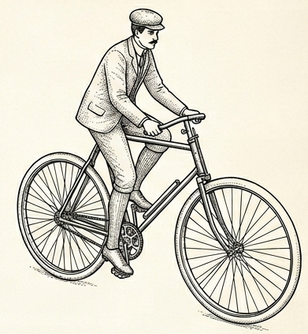
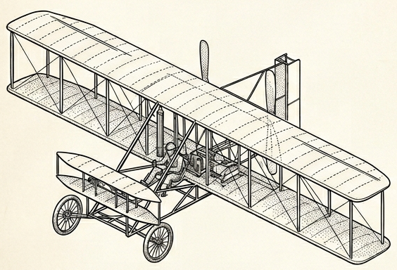
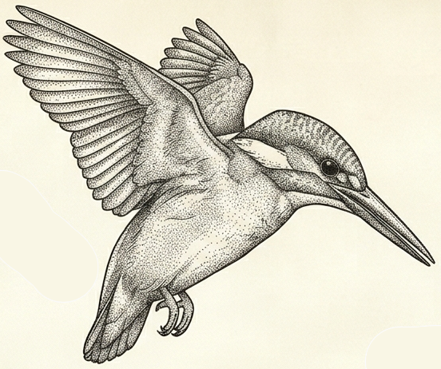
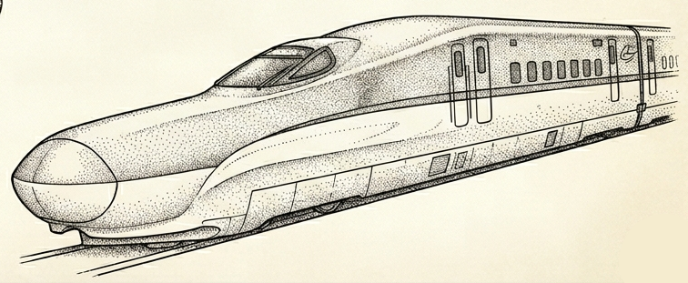
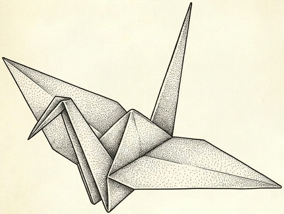
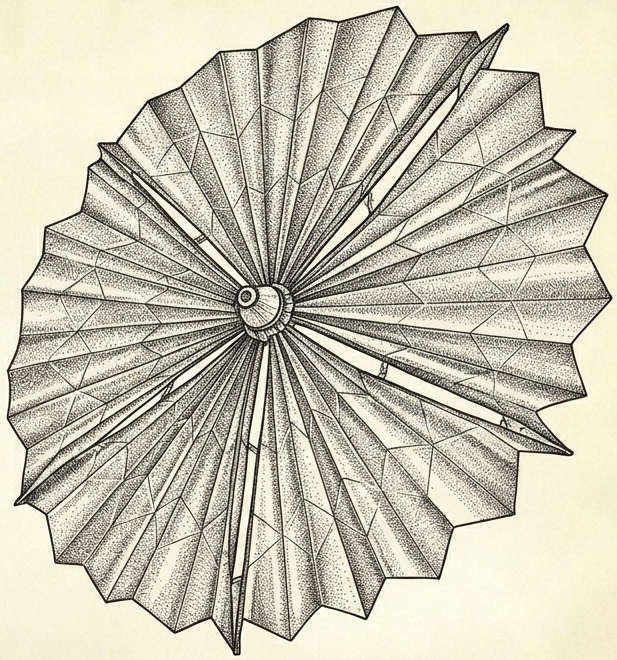
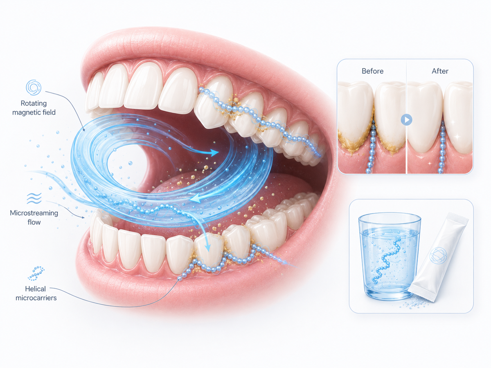
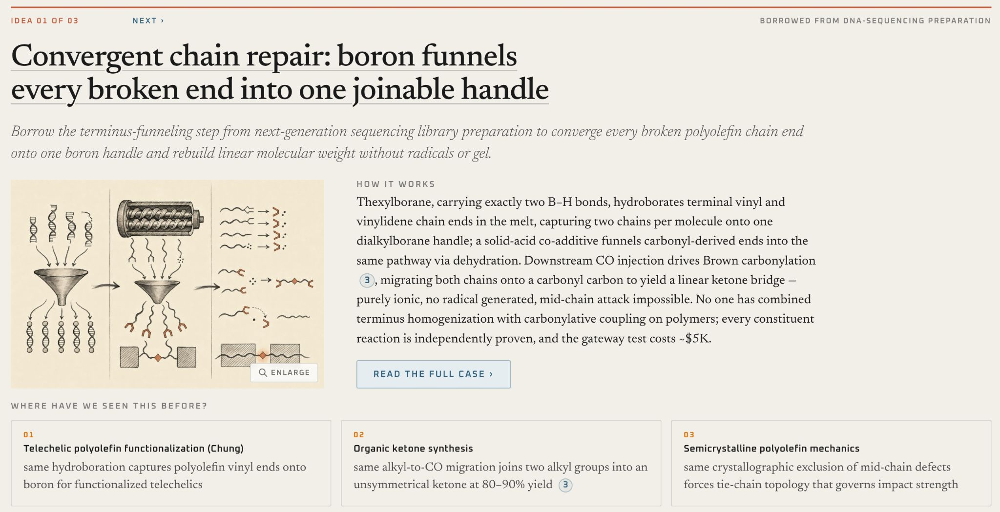
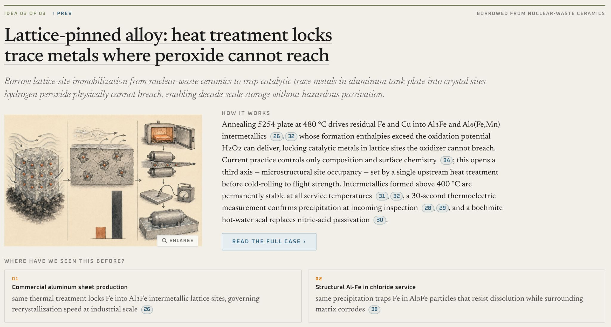

Kittur Lab · Human-Computer Interaction Institute
Every R&D team is stuck on problems they’re making only incremental progress on — because experts search where they already know, and AI gets you more of what’s already out there. Our research finds breakthrough solutions from distant domains: proven mechanisms from fields a team would never look in, mapped into their domain, with the evidence they already work and the tests that would prove it.
Bring me a company and a problemFor thousands of years, innovation has borrowed proven mechanisms from distant domains. Serendipity found these. We make them searchable — forward (a problem → solutions from other fields) and in reverse (a capability → the problems it could solve).
Twelve-plus years of research at HCII: published in PNAS, best-paper awards at CHI, CSCW and KDD, NSF-funded, four patents. Niki Kittur, Nikolas Martelaro, Vikram Mohanty, Dafna Shahaf.

→

→

→
Nobody in oral care would look at an oil rig. The engine did — and came back with a concept, its evidence, and the tests to run.

Retrieve by mechanism: “dislodge a stubborn deposit from a narrow channel.” Matches came from drilling fluids that scour a borehole and vascular medicine, where magnetic bead swarms clear clots.
Map the mechanism onto the real constraints: safe in the mouth, no hardware a consumer won’t use, a sachet and a rinse. Every claim is tied to a primary source — not a hallucinated one.
Hand back the test protocols and success criteria that settle the risk: chain formation, biofilm softening, debris removal, bead recovery. The team knows what to run Monday.
The same loop runs on a materials scientist’s holy-grail problem or a propulsion chemist’s storage problem — with their experts in the loop.
Three “holy-grail” problems stuck 10+ years · 17 scientists
more novel, with no drop in feasibility (p < .05)
promising ideas vs. 0–1 from their own LLM tools
already in their managed innovation pipeline

“If we sat down and spent a week going through these things, that would be a worthwhile investment to make sure that we’re spending the next two years on the right projects.” — R&D group leader
“How can we extend the life of our propellant?”
estimated propellant life at minimal extra cost vs. 5–10% from their previous approach
Concepts borrowed from semiconductor wafer gettering and nuclear-waste ceramics; scope expanding.

“If this was [available to every engineer] they would [use it] daily.” “…ideas which no one in my team could come up with.” — R&D leader, Fortune 500 automotive
Built alongside Covestro · Ursa Major · Toyota · Bosch · Conservation X Labs · and a public P&G challenge
partner in conversation plain: target
VP or Head of R&D · CTO, Chief Science or Chief Innovation Officer · open-innovation and alliance-management leads · the BD lead looking for new markets for an existing material or IP.
A problem their team has been on for years · a paid-for capability whose best markets they can’t see · they’ve tried the LLMs and been underwhelmed · an open-innovation mandate and appetite for a pilot.
“What’s the problem your best people have been on the longest?”
“What have you paid to develop that you suspect has uses you can’t see from here?”
“Where did the AI tools your teams tried fall short?”
Send us the answer. We come back with directions and the CMU people who could pursue them.
A company’s interest is nebulous, or they name a problem they’ve been stuck on. Send it to us before the first meeting. You walk in with three concrete directions on their problem — a reason to meet, not a brochure.
Through the lab: a half-day ideation session with their R&D team on a named problem, or a scoped sponsored project on the thing they’ve been stuck on. Their experts stay in the loop; our students and postdocs do the work.
Before you pick up the phone: from a company’s capabilities and IP, we map which labs and projects across campus they could fund or license — so you know which faculty to pair with which company, and who to call on next.
For production deployment inside a company there is also a CMU spinout, Analogical Engines, built on this research — so an inquiry can be routed to the right door: exploratory work through the lab, deployment through the company.
Happy to talk to any of you.
Niki Kittur
nkittur@cs.cmu.edu
Professor, Human-Computer Interaction Institute, Carnegie Mellon University